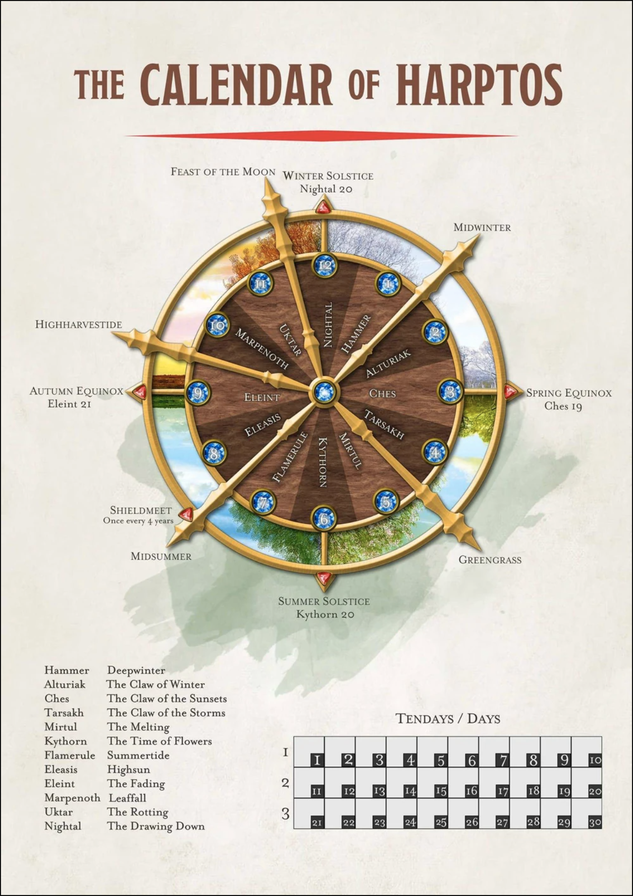

Timeline of Events
The following entries are an account of the major events that take place within the Sword Coast in the aftermath of the Great Lycan War.

1388 -
The Dresden family perform a ritual in their home that goes terribly wrong. Nothing more is known of their fate.
1463 -
Official end of the Great Lycan War
1465 -
Endrie Grazak’tel is born. His mother is soon killed.
1468 -
First Pentannual Gathering of Peace
1471 -
Nero Andromeda is created by Sylbella Ondren.
1472 -
Briseis Torment is born in Amphail.
1473 -
Second Pentannual Gathering of Peace
1478 -
Third Pentannual Gathering of Peace
1483 -
Fourth Pentannual Gathering of Peace
Endrie Grazak’tel is killed by his father, and revived by the Ancestral Well, channeling thunder and lightning from an unknown god. He is later found by Arvellia Krauss and begins to work with her.
1485 -
The Torment family of Amphail is attacked, leaving the “sole” survivor, Briseis, to float down to Waterdeep. She is taken in by the Priestesses of the Temple of Solune.
Arvellia Krauss begins experimenting on Endrie Grazak’tel, killing and reviving him.
1486 -
Nero Andromeda returns to find his home burned. He is captured by a ruthless band of slavers for work in a mine, and later entertainment.
1488 -
Fifth Pentannual Gathering of Peace
1490 -
The Dawnbreaker Guild makes a deal with the Void, Alterrah. Calypsa is created, and quickly taken in by Guildmaster Zeldail of the Daggerford Sword Guards.
Briseis Torment leaves the Temple of Solune to join the Sword Guards.
1491 -
Recovery of the Forge of Spells. Subsequent promotion of Lords’ Alliance Captain Sildar Hallwinter to Captain of Practical Operations in the Sword Guards.
Nero Andromeda escaped the camp, thanks to a member of the Sword Guards, and is bitten in the swamp, becoming a wild Werecrocodile. He is taken in by the Bloodied Claw, a lycanthrope clan who reharness his wildblood into the tamer rituals.
Endrie Grazak’tel and Calypsa meet. They bond over their unusual histories.
Endrie reveals information about the Grazak’tel clan to Zeldail.
1492 -
Endrie Grazak’tel destroys the tower of Arvellis Krauss after discovering she’s been manipulating his thoughts and perception.
1493 -
Grayson of Secomber is killed.
Kolgura, father of Endrie Grazak’tel, seeks out his son.
Calypsa is invited away from Zeldail by Sildar Hallwinter.
Guildmaster of the Waterdeep Sword Guards entrusts Briseis to represent them.
As the new Chief’s right-hand man, Nero is invited to share his music with the Gathering.
21st Mirtul - 6th Pentannual Gathering of Peace (Campaign Beginning)
22nd Mirtul - Sildar requests the team ally alongside each other to solve an issue in Longsaddle.
24th Mirtul - The party arrives in Longsaddle and defeats the Chitines and Choldrith. Calypsa bonds with a magical wolf that disappears the next morning.
27th Mirtul - The party returns to Sildar and uncovers their next mission
28th Mirtul - The party enters Dresden Keep and faces against the undead. Nero traumatises Calypsa with the voice of her lost spirit wolf, Beelial. Endrie is disintegrated.
29th Mirtul - The remaining party decides to ally as a new chapter of the Sword Guards.
30th Mirtul - Hansen Prast arrives as the Steward of the Endrie Keep.
1st Kythorn - The party makes trails for Waterdeep. Aeovar arrives during the night.
2nd Kythorn - Travel
3rd Kythorn - The party comes across a rowdy tavern on the side of the High Road heading towards Lailon. They encounter The Shake and Stirred, and Rowan Nightshade.
4th Kythorn - The party travels to Waterdeep. Rowan reveals some of his secrets and sends a message out to learn of Grayson of Secomber. Nero visits the family home and uncovers the remnants of Sylbella’s ledger.
5th Kythorn - Rowan delivers the message “...The witch…”. The party portals to Neverwinter.
6th Kythorn - The party leaves for Triboar and the energy source. They encounter a mysterious elf who helps transport them.
10th Kythorn - The party misses four days and arrives in Triboar to hunt for the mysterious energy source. They meet with the ancient Lord Protector of Triboar and depart the town.
11th Kythorn - The party arrives at the cave entrance towards the mysterious energy source and meet a man named Core, who is quickly decapitated by a Bulette and reveals himself to be a Warforged.
The party obtains the Core Hull vehicle.
12th Kythorn - Travel. Well-groomed Bugbear encounter.
13th Kythorn - Travel. Spike head encounter. Aeovar marks the place.
14th Kythorn - Travel. Crazed Halfling encounter.
15th Kythorn - Travel. Vegetable stall encounter.
16th Kythorn - The party arrives at the Silverymoon Guild to find the population of the guild massacred, along with the local werewolf clan. Rescuing the last survivor, Adrora Floshem, the party tracks down the last of the werewolves and is forced to kill them, before returning home.
17th Kythorn - The party finds an elven envoy sent to ask for them, seeking their help with recent Wild Magic surges in Evereska. They travel to Evereska and enter the breach to a Feywild Demiplane.
13th Flamerule - The party reemerges from the breach. Nero dies, Briseis loses all of her wealth. The remaining party has some downtime.
20th Flamerule - Downtime ends. The party travels to kill a man (Sylas Fulfur), and then to Luskan. After Sylas reveals the origins of the list, they leave him in peace.
21st Flamerule - The party meets Arathir, a barbarian, who travels with them to meet the golden dragon of Luskan. They find the dragon missing a skull and it’s hoard, falling into an ambush of drakes as a mysterious dragonborn escapes.
22nd Flamerule - The party returns to Endrie Keep to bear witness to new dreams. ‘Sildar Hallwinter’ is found dead in an alleyway.
23rd Flamerule - The party is attacked by a Shadowfellian Death Knight who leaves Hansen in critical condition. Rushing to Neverwinter for medical attention, the party discovers Sildar has allegedly been killed, before discovering that he’s actually been taken by vampires. They rescue him and rush back to prevent Zeldail from seizing control of the Sword Guards. He reclaims control. Zeldail confesses to attempting to kill his own son, Linek.
25th Flamerule - Hansen is released from the medical wing, scarred, but alive.
26th Flamerule - The party heads to Waterdeep. They reunite with Rowan to establish the state of the shadow portals before diving in to one.
4th Eleasis - The party returns. With new insight gained about Core Hull and the mysterious RC, they head to Amphail to face the Beast.
5th Eleasis - The party defeats the Beast of Amphail and breaks the curse, freeing Briseis’ sister Pia from her murderous state. Briseis claims the Blade of Amphail and they all return to Waterdeep.
6th Eleasis - The party uncovers the identity of the Void - Allison Hallwinter - at the Hall of Knowledge before going to check out the anti-magic field in the prison.
7th Eleasis - Calypsa claims the Silver Eclipse from Sildar’s Dream. The party journeys to the Waterdeep Island Prison and frees the Witch, who escapes from them. Tierno reveals he is a Paragon and betrays Aeovar.
8th Eleasis - Albynn seeks Arathir’s aid. They agree to help her kill the Death Knight, and spend the day planning.
9th Eleasis - The party faces the Hammer, successfully slaying him and claiming the Crown of Anvils. Celine Quortin claims it for the Ironclaw family. Pia is sent to Neverwinter. The party returns to Neverwinter before heading to Endrie Keep. They uncover the tapestry of the Dresden line and learn one seems to have survived the tragedy.
10th Eleasis - The party heads to Baldur’s Gate. They start by investigating the tower of Ostin Hagen to find his clone, afraid and seemingly not alone. Aeovar seeks out Arvellia once more and makes a decision. Endrie awakens in a new place and meets Rowan Nightshade. Calypsa convinces the Hagens to coexist. With that sorted, the party returns to Baldur’s Gate.
11th Eleasis - The party investigates the sleeping sickness that has spread through several of the wealthy of Baldur’s Gate, eventually being guided to the Devilish Grins, a new brothel that has opened in the city. They discover the energy of the sleeping people is being drawn away to summon a powerful demon, whom they defeat. During the night, they are lured back to Endrie Keep, where they learn Hansen Prast is Mendax and are cast into the Astral Sea.
1st Elient - The party returns to the Sword Coast.
2nd Elient - The party heads to Neverwinter to deal with Endrie’s warrant. They meet Jaksol Ripstone, a city investigator now possessed by the Revenant of the original soul of Endrie. Pia, who has learned the skills of a Druid, helps break them out of custody. The party sets a plan to head for Thundertree, the point of contact for the Oncoming Storm.
3rd Elient - The party reaches Thundertree. Ye Olde Confectionary Company releases their new Waffle Pots. Endrie makes a new deity, Myrsky, out of the Oncoming Storm.
4th Elient - The party arrives in Waterdeep to face the first of the Paragons. Discovering Rowan Nightshade in an unbreaking sleep, Calypsa Dreams the party into his mind, where they face the Fey Hag, Ophelia. Awakening Rowan within his own mind, an unknown power channels through him and slays the Hag.
5th Elient - After a night’s rest, the party heads to the Warlock’s Crypt via Daggerford, where they terrorise the militarised locals.
6th Elient - Reaching the destroyed city of Warlock’s Crypt and finding a doorway of darkness, the party enters and finds themselves in a room of darkness, inhabited by the Shadow Paragon Shade and doppelgangers of themselves in different lives. With great effort, they slay their alternate selves and Briseis destroys the darkness that is Shade, sending the party flying out and back into the city ruins.